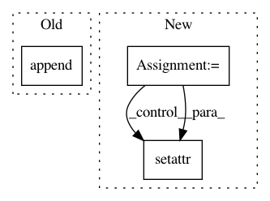

82d70085e0ad4a355acfd486884a3dc28af1b6b9,chainer_/models/squeezenet.py,SqueezeNet,__init__,#SqueezeNet#Any#Any#Any#Any#Any#Any#,157
Before Change
in_channels = init_block_channels
for i, channels_per_stage in enumerate(channels):
//stage = Sequential()
self.features.append(partial(
F.max_pooling_2d,
ksize=3,
stride=2))
for j, out_channels in enumerate(channels_per_stage):
expand_channels = out_channels // 2
squeeze_channels = out_channels // 8
self.features.append(FireUnit(
After Change
out_channels=init_block_channels,
ksize=init_block_kernel_size))
in_channels = init_block_channels
for i, channels_per_stage in enumerate(channels):
stage = SimpleSequential()
with stage.init_scope():
setattr(stage, "pool{}".format(i + 1), partial(
F.max_pooling_2d,
ksize=3,
stride=2))
for j, out_channels in enumerate(channels_per_stage):
expand_channels = out_channels // 2
squeeze_channels = out_channels // 8
setattr(stage, "unit{}".format(j + 1), FireUnit(
in_channels=in_channels,
squeeze_channels=squeeze_channels,
expand1x1_channels=expand_channels,
expand3x3_channels=expand_channels,
residual=((residuals is not None) and (residuals[i][j] == 1))))
in_channels = out_channels
setattr(self.features, "stage{}".format(i + 1), stage)
setattr(self.features, "dropout", partial(
F.dropout,
ratio=0.5))
In pattern: SUPERPATTERN
Frequency: 3
Non-data size: 3
Instances
Project Name: osmr/imgclsmob
Commit Name: 82d70085e0ad4a355acfd486884a3dc28af1b6b9
Time: 2018-09-02
Author: osemery@gmail.com
File Name: chainer_/models/squeezenet.py
Class Name: SqueezeNet
Method Name: __init__
Project Name: explosion/thinc
Commit Name: 3140a57326e533548df00f0f128cd356932d400b
Time: 2017-01-11
Author: honnibal+gh@gmail.com
File Name: thinc/neural/_classes/model.py
Class Name: Model
Method Name: __init__
Project Name: WZBSocialScienceCenter/tmtoolkit
Commit Name: b1453b0d225f78553f08dc3e4f3ad393e32f2343
Time: 2020-01-21
Author: markus.konrad@wzb.eu
File Name: tmtoolkit/preprocess/_preprocworker.py
Class Name: PreprocWorker
Method Name: _task_add_metadata_per_token